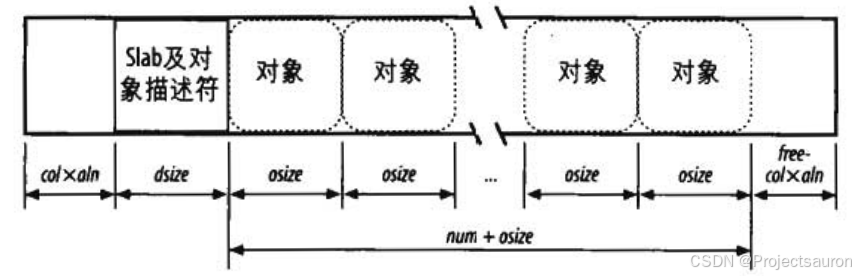
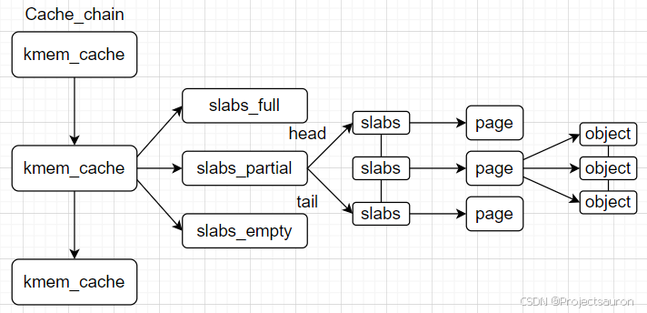

Linux 内存管理（八）之 slab 分配器
@TOC
前言
在上一节 Linux 内存管理（七）之伙伴系统算法 中，我们学习了 Linux 内核如何使用伙伴系统算法以页为单位管理内存，进行内存分配。这一节，将要提到的 slab 算法也是一种内存分配算法。
一、为什么要引入 slab 算法
Linux 内存以页为单位进行内存管理，伙伴系统算法以 $2^n$ 次方个页面来进行内存分配管理，最小为 $2^0$，也就是一页，最大为 $2^{11}$，就是 4MB 大小的连续内存空间。但是页的粒度还是太大，Linux 下是 4KB 大小，也就是 4096 个字节，而内核本身有很多数据结构时时刻刻都需要分配或者释放，这些数据的大小又往往小于 4KB 大小，一般只有几个几十个字节这样的大小。而且大多数情况下，需要的内存大小都不是按页对齐的
比方最常用到的 task_struct（进程描述符）结构体和 mm_struct（内存描述符）结构体，其中，sizeof task_struct = 9152，sizeof mm_struct = 2064。这样一来如果所有的这些数据结构都按照页来分配存储和管理，那么内存中将会有大量的内存碎片。
一种更好的算法源自 slab 分配器模式，该模式最早用于 Sun 公司的 Solaris2.4 操作系统中。这就是 slab 算法。
由上可知，slab 分配需要解决的就是是内存的内部碎片问题。
二、slab 算法的工作机制
1、普通和专用高速缓存
高速缓存被分为两种类型：普通和专用。普通高速缓存只由 slab 分配器用于自己的目的而专用高速缓存由内核的其余部分使用。
普通高速缓存是：
- 第一个高速缓存叫做
kmem_cache，包含由内核使用的其余高速缓存的高速缓存描述符。cache_cache变量包含第一个高速缓存的描述符。 - 另外一些高速缓存包含用作普通用途的内存区。内存区大小的范围一般包括 13 个几何分布的内存区。一个叫做
malloc sizes的表（其元素类型为cache_sizes）分别指向 26 个高速缓存描述符，与其相关的内存区大小为32, 64, 128, 256, 512, 1024, 2048, 4096, 8192, 16384, 32768, 65536 和 131072 字节。对于每种大小，都有两个高速缓存：一个适用于 ISA DMA 分配，另一个适用于常规分配。
2、slab 和 buddy system 的关系
slab 系统与 buddy 系统所要解决的问题是互补的，一个解决外部碎片一个解决内部碎片，但事实上，slab 在新建 cache 时同样需要用到 buddy 来为之分配页面，而在释放 cache 时也需要 buddy 来回收这此页面。也就是说，slab 是依赖于 buddy 系统的。
在某些情况下内核模块可能需要频繁的分配和释放相同的内存对象，这时候 slab 可以作为内核对象的缓存，当 slab 对象被释放时，slab 分配器并不会把对象占用的物理空间还给伙伴系统。这样的好处是当内核模块需要再次分配内存对象时，不需要那么麻烦的向伙伴系统申请，而是可以直接在 slab 链表中分配一个合适的对象。
3、slab 分配器基本概念
3.1 slab
slab 是 slab 分配器从伙伴系统申请页面的基本单位。然而 slab 的大小不是固定的，slab 从属于某个 kmem cache 实例，不同的 kmem cache 实例，其 slab 的大小是不同的。slab 的大小必须是 $2^{order}$ 个 pages，order 不能超过伙伴系统所支持的最大的 order。
slab 内存分配器从伙伴系统分配了 slab 之后，会将其挂在对应的 kmem cache 实例的 node 节点。
3.2 object
object 是 slab 分配器对外提供的申请内存的基本单位。slab 分配器从伙伴系统申请了 buddy 之后，会将其拆分成一个个的 object，并缓存在 kmem cache 实例的 cpu_cache 中，用户申请内存时，其实获取的就是一个个object。
一旦 object 缓存耗尽，就会重新从伙伴系统申请 slab，并再次将其拆分成 object，放入 kmem cache。
3.3 cache
slab 分配器中的 cache 跟硬件 cache 无关，是一个纯软件的概念。slab 内存分配器有两种 cache：一个是 slab 的 cache，一个是 object 的 cache。slab 内存分配器从伙伴系统获取页面后，会将其加入 kmem cache 的 node 节点，这个就是 slab 的 cache；将 slab 拆分成多个 object，并将 object 加入kmem cache 的 cpu_cache 内存池，这个就是 object 的 cache；可以看到这两种 cache 实际是对共同的物理页面的两种缓存形式。
4、slab 的基本思想
在内核中，经常会使用一些链表，链表中会申请许多相同结构的结构体，比如文件对象，进程对象等等，如果申请比较频繁，那么就为它们建立一个内存池，内存池中都是相同结构的结构体，当想申请这种结构体时，直接从这种内存池中取一个结构体出来。一个物理页就可以作用这种内存池的载体，进而进行充分利用，减少了内部碎片的产生。
所以 slab 的基本思想是，先利用页面分配器分配出单个或者一组连续的物理页面，然后在此基础上将整块页面分割成多个相等的小内存单元，以满足小内存空间分配的需要。也就是用对象的概念来管理内存。
而所谓的对象就是存放一组数据结构的内存区，为便于理解可把对象看作内核中的数据结构（例如：task_struct, file_struct 等）。
相同类型的对象归为一类，每当要申请这样一个对象时，slab 分配器就从一个 slab 列表中分配一个这样大小的单元出去，而当要释放时，将其重新保存在该列表中，而不是直接返回给伙伴系统，从而避免内部碎片。
5、对齐内存中的对象
slab 分配器所管理的对象可以在内存中进行对齐，也就是说，存放它们的内存单元的起始物理地址是一个给定常量的倍数，通常是 2 的倍数。这个常量就叫对齐因子（alignment factor）。
slab 分配器所允许的最大对齐因子是 4096，即页框大小。这就意味着通过访问对象的物理地址或线性地址就可以对齐对象。在这两种情况下，只有最低的 12 位才可以通过对齐来改变。
6、slab 着色
同一硬件高速缓存行可以映射 RAM 中很多不同的块，相同大小的对象倾向于存放在高速缓存内相同的偏移量处。在不同的 slab 内具有相同偏移量的对象最终很可能映射在同一高速缓存行中。高速缓存的硬件可能因此而花费内存周期在同一高速缓存行与 RAM 内存单元之间来来往往传送两个对象,而其他的高速缓存行并未充分使用。slab 分配器通过一种叫做 slab 着色（slab coloring）的策略尽量降低高速缓存的这种行为：把叫做颜色（color）的不同随机数分配给 slab。
在 slab 内放置对象就有很多种可能的方式。方式的选择取决于对下列变量所做的决定：
- num：可以在 slab 中存放的对象个数（其值在高速缓存描述符的 num 字段中）。
- osize：对象的大小，包括对齐的字节。
- dsize：slab 描述符的大小加上所有对象描述符的大小，就等于硬件高速缓存行大小的最小倍数。如果 slab 描述符和对象描述符都存放在 slab 的外部，那么这个值等于 0。
- free：在 slab 内未用字节（没有分配给任一对象的字节）的个数。
一个 slab 中的总字节长度可以表示为如下表达式：$slab 的长度=(num * osize)+dsize +free$。
slab 分配器利用空闲未用的字节 free 来对 slab 着色。具有不同颜色的 slab 把 slab 的第一个对象存放在不同的内存单元，同时满足对齐约束。可用颜色的个数是 $free/aln$（这个值存放在高速缓存描述符的 colour 字段）。因此，第一个颜色表示为 0，最后一个颜色表示为 $(free/aln)-1$。
如果用颜色 col 对一个 slab 着色，那么，第一个对象的偏移量（相对于 slab 的起始地址）就等于 $col*aln+dsize$ 字节。下图显示了 slab 内对象的布局对 slab 颜色的依赖情况。着色本质上导致把 slab 中的一些空闲区域从末尾移到开始。

只有当 free 足够大时，着色才起作用。显然，如果对象没有请求对齐，或者如果 slab 内的未用字节数小于所请求的对齐（$free \leq aln$），那么，唯一可能着色的 slab 就是具有颜色 0 的 slab，也就是说，把这个 slab 的第一个对象的偏移量赋为 0。
三、slab 的数据结构
1、slab 的结构图

每个 kmem_cache 都是链接在一起形成一个全局的双向链表，由 cache 指向该链表，系统可以从 Cache_chain 开始扫描每个 kmem_cache，来找到一个大小最合适的 kmem_cache，然后从该 kmem_cache 中分配一个对象。
2、slab 结构解释
2.1 cache_chain
最高层是 cache_chain，这是一个 slab 缓存的链接列表。可以用来查找最适合所需要的分配大小的缓存（遍历列表）。cache_chain 的每个元素都是一个 kmem_cache 结构的引用（称为一个 cache）。它定义了一个要管理的给定大小的对象池。
2.2 kmem_cache
结构体定义如下：
1 | /* |
2.3 slabs_full、slabs_partial、slabs_empty
每个缓存都包含了一个 slabs 列表，这是一段连续的内存块（通常都是页面）。其中每个 kmem_cache 有三条链表：
- slabs_full 表示该链表中每个 slab 的 object 对象都已经分配完了
- slabs_partial 表示该链表中的 slab 的 object 对象部分分配完了
- slabs_empty 表示该链表中的 object 对象全部没有分配出去（空 slab，未分配）
对象的分配和释放都是在 slab 中进行的，所以 slab 可以在三条链表中移动，如果 slab 中的 object 都分配完了，则会移到 full 链表中；如果分配了一部分 object，则会移到 partial 链表中；如果所有 object 都释放了，则会移动到 empty 链表中；其中当系统内存紧张的时候，slabs_empty 链表中的 slab 可能会被返回给系统。
2.4 cache_cache
所有的 kmem_cache 结构都是从 cache_cache 分配的：
1 | static kmem_cache_t cache_cache = { |
在系统初始化时，内核会调用 kmem_cache_init 函数对 malloc_size 数组进行遍历，对数组中的每个元素都调用 kmem_cache_create() 函数在 cache_cache 中分配一个 struct kmem_cache 实例，并且把 kmem_cache 所在的地址赋值给 cache_size 中的 cs_cachep 指针。